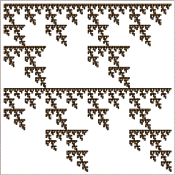
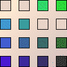
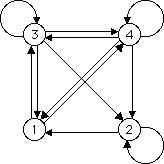
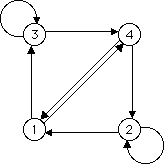
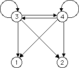

IFS with Memory
Combinations of Lines
The picture on the left certainly contains the lines in the middle and right.
From the corresponding tables or graphs we see the two collections of lines generate the whole picture.





Return to
combinations of lines
.